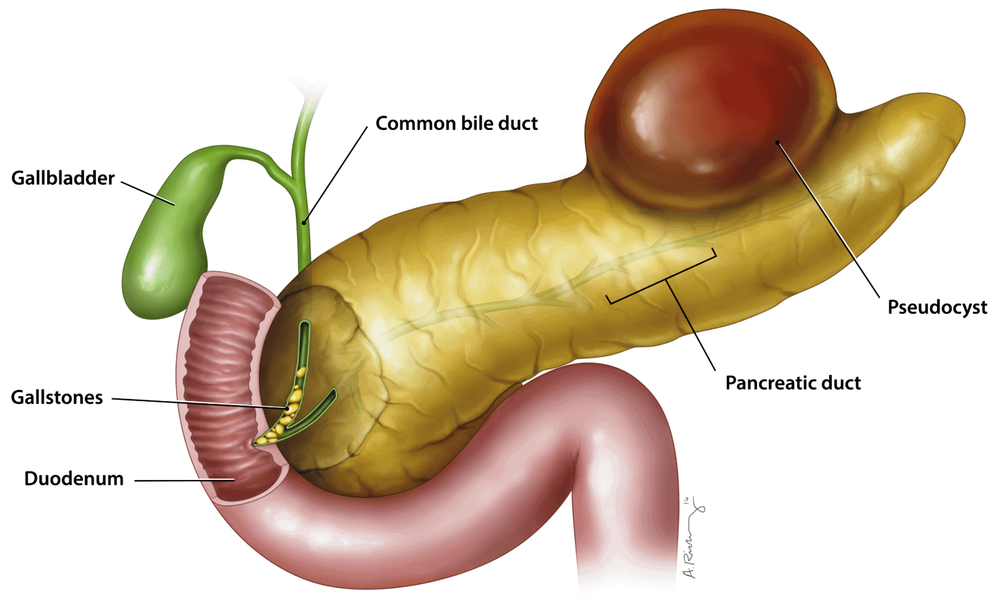
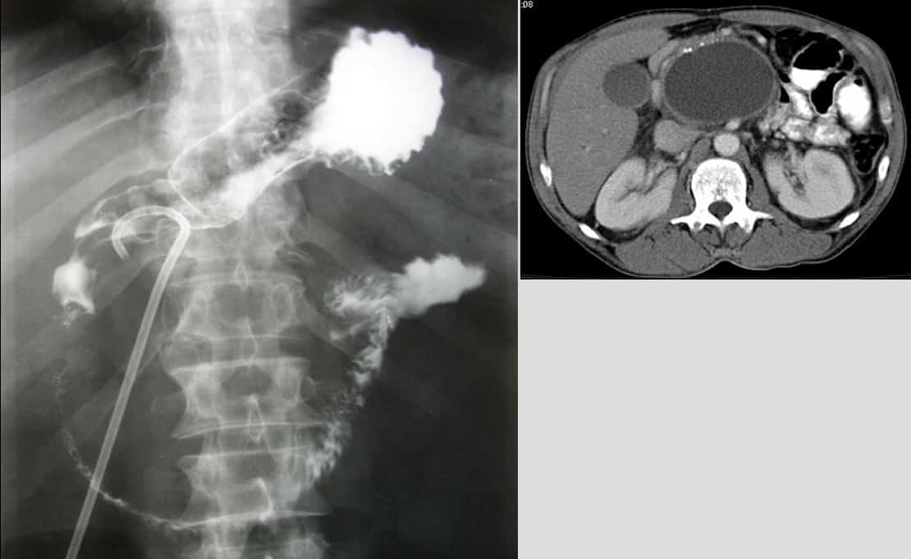

Nang Giả Tụy
I. Đại cương
– Nang giả tụy (Pancreatic Pseudocyst) là sự tập trung khu trú chất dịch có nồng độ cao của amylase (và các men tụy khác) trong một cấu trúc dạng nang mà thành của nó không có lớp biểu mô.
– Nang giả tụy chiếm phần lớn (75-80%) các tổn thương dạng nang của tụy.
– Xuất phát điểm của nang giả tụy là sự tụ dịch cấp tính quanh tụy trong viêm tụy cấp thể phù (không kèm hoại tử tụy). Nguồn gốc của dịch là sự vỡ của ống tụy (do hoại tử một phần thành các ống tụy nhỏ trong viêm tụy cấp hay tăng áp lực trong ống tụy do chít hẹp hay sỏi ống tụy trong viêm tụy mãn). Dịch tụ thường được hấp thu trong phần lớn các trường hợp. Những trường hợp dịch không thể hấp thu sẽ gây phản ứng xơ hoá với các cấu trúc chung quanh, tạo thành vỏ bao, hình thành nang giả tụy.
– Cần trung bình 4-6 tuần để hình thành một nang giả tụy.
– Trong khoảng 50% trường hợp, nang giả vẫn thông với ống tụy. Những u nang như vậy khó điều trị hơn và có nhiều khả năng tái phát hơn.


– Có thể có một hoặc nhiều nang . Nhiều nang hơn thường xuyên quan sát thấy ở bệnh nhân nghiện rượu, trong khoảng 15% trường hợp.
– Kích thước thay đổi từ 2-30 cm. Một số nang giả trong nhu mô tụy có thể hình thành các vách ngăn. 85-90% nang giả tuỵ chỉ có một khoang. Nếu có nhiều khoang, các khoang thường thông thương với nhau qua các vách ngăn không hoàn toàn. Nang có nhiều vách ngăn cần chẩn đoán phân biệt với u dạng nang của tuỵ
– Vị trí nang giả tụy:
+ Trong hầu hết các trường hợp, nang giả tụy hình thành ở trong hậu cung mạc nối. Thành nang dính chặt với thành sau dạ dày, mạc nối vị tràng, tá tràng, mạc treo đại tràng ngang.
+ Trong một số ít trường hợp, nang giả tụy có thể hình thành trong chủ mô tuỵ, do sự hoá lỏng của mô tụy hoại tử (vô trùng) trong viêm tụy cấp. Khoảng 1/3 nang giả tụy thấy ở đầu tụy, 2/3 xuất hiện ở đuôi.
+ Các tạng: gan, lách, thận, dạ dày…
+ Các khoang trong ổ bụng
+ Trong trường hợp rất hiếm, dịch tụy có thể phát triển lên trên lồng ngực và nang giả tụy có thể hình thành ở trung thất sau.
* Diễn biến nang giả tụy:
+ Thoái triển
+ Tăng kích thước
+ Chảy máu: do vỡ giả phình ĐM trên thành nang, thường là ĐM lách
+ Nhiễm trùng
+ Vỡ nang vào ống tiêu hóa hay khoang sau phúc mạc
+ Chèn ép đường mật, ống tiêu hóa
* Nguyên nhân: Viêm tụy cấp thể phù, viêm tụy mạn, chấn thương
* Tiêu chuẩn dẫn lưu:
– Nang giả tụy tồn tại trên 6 tuần
– Đường kính > 5cm, kích thước không giảm
– Biến chứng: nhiễm trùng, chảy máu
© Chẩn Đoán Hình Ảnh Xray.vn
II. Giải phẫu
– Tụy là tạng nằm ngoài khoang phúc mạc. Nằm trước khối cơ thành sau ổ bụng. Bắt ngang qua cột sống, cực phải (đầu tụy) bắt đầu từ tá tràng, cực trái (đuôi tụy) kết thúc ở lách. Là một tuyến tiêu hóa vừa có chức năng ngoại tiết (amylase, lypase, trypsin) vừa có chức năng nội tiết (insulin và glucagon).
– Dài 12-15cm, cao 6cm, dày 3cm, nặng 70-80gram.
– Tụy được chia thành 5 phần: mỏm tụy, đầu tụy, cổ tụy, thân tụy và đuôi tụy.
– Dịch tụy được dẫn ra ngoài bởi 2 ống tuy:
+ Ống tụy chính (Wirsung): chạy dọc chiều dài tụy và kết hợp với ống mật chủ tạo thành bóng Vater trước khi đổ vào thành của tá tràng (khúc II tá tràng).
+ Ống tụy phụ (Santorini): thu nhận dịch tụy ở đầu và mỏm tụy đổ vào lỗ tụy phụ, lỗ này nằm phía trên lỗ đổ của bóng vater 1 chút.
+ Quanh lỗ đổ của bóng Vater có cơ vòng Oddi bao quanh, điều tiết lượng mật và dịch tụy đổ xuống tá tràng.
Ống tụy chính và ống tụy phụ có liên thông với nhau ở trong tụy.


III. Chẩn đoán x-quang
– Trên X-quang bụng không chuẩn bị, nang giả tuỵ có thể cho hiệu ứng khối, đó là hình ảnh một khối mờ đẩy lệch các tạng xung quanh như dạ dày, đại tràng ngang…
– Đôi khi, sự hiện diện của các đốm vôi hóa ở vùng thượng vị gợi ý bệnh lý nguyên nhân (viêm tuỵ mãn) hoặc hình ảnh vôi hóa thành nang.


– Trên X-quang dạ dày-tá tràng cản quang, nang giả tuỵ biểu hiện bằng hình ảnh dạ dày bị đẩy ra trước (phim chụp nghiêng) hay khung tá tràng mở rộng.


– Nang giả tụy trung thất biểu hiện bóng mờ trung thất sau.


– Rò màng phổi gây tràn dịch.


IV. Chẩn đoán siêu âm
– Dịch khu trú giàu men tụy có thể thấy sau 10 ngày khởi phát viêm tụy, phần lớn những tổn thương này mất đi theo thời gian, nhưng nếu ổ dịch vẫn tồn tại trên 4 tuần thì coi là nang giả tụy.
– Ổ tụ dịch trống âm kèm tăng âm phía sau, thành vỏ dày, bờ rõ.
– Nang giả tụy trong quá trình đang hình thành chứa dịch giảm âm, có những vẩn âm hoặc giả vách do mô hoại tử hoặc chảy máu.


=> Case lâm sàng 1:


=> Case lâm sàng 2:


=> Case lâm sàng 3:


=> Case lâm sàng 4:


=> Case lâm sàng 5:


=> Case lâm sàng 6:


=> Case lâm sàng 7:


=> Case lâm sàng 8:


V. Chẩn đoán CLVT
* Đặc điểm hình ảnh
– Khối giảm tỷ trọng dạng dịch 0-20HU, dịch trong nang đồng nhất
– Giới hạn bởi vỏ giả ngấm thuốc sau tiêm, vỏ giả có thể vôi hóa.
– Có thể có vách giả không ngấm thuốc sau tiêm.
– Kích thước thay đổi, có thể có nhiều nang giả tụy và nang có vách.


– Tổ chức trong nang có thể không đồng nhất do hoại tử, chảy máu, viêm nhiễm hay rò vào ống tiêu hóa.
– Nang giả tụy đầu tụy chèn ép đường mật.


– Hình ảnh giả phình động mạch trên thành nang


* Vị trí nang giả tụy: hậu cung mạc nối, các tạng (tụy, gan, lách, thận, dạ dày), các khoang trong ổ bụng, trung thất sau.
– Trong gan: nang giả có thể xuất hiện dưới dạng cấu trúc hình ống, phân nhánh, bắt nguồn từ đầu tụy, đi qua rốn gan vào nhu mô gan. Một cơ chế được đề xuất là dịch lan từ đầu tụy vào dây chằng gan tá tràng, chảy vào rốn gan cùng với động mạch gan và ống gan chung => Điều này giải thích sự xuất hiện phân nhánh của nó.
– Trung thất: Sự lan rộng trung thất của một nang giả xảy ra khi ống tụy bị vỡ ra phía sau, giải phóng các enzym phân giải protein ở sau phúc mạc, vào trung thất sau qua khe động mạch chủ hoặc thực quản.


=> Case lâm sàng 1: nang giả tụy trong lách


=> Case lâm sàng 2: nang giả tụy trung thất


=> Case lâm sàng 3: nang giả tụy trung thất


– Nang giả tụy trong tụy: tổn thương dạng nang đồng nhất hoặc không, viền mỏng đều ngấm thuốc, vách giả không ngấm thuốc sau tiêm.


=> Case lâm sàng 1:


=> Case lâm sàng 2:


=> Case lâm sàng 3:


=> Case lâm sàng 4:


=> Case lâm sàng 5:


=> Case lâm sàng 6:


=> Case lâm sàng 7:


=> Case lâm sàng 8:


=> Case lâm sàng 9:


=> Case lâm sàng 10:


=> Case lâm sàng 11:


VI. Phân biệt
* Phân loại Atlanta 2012
– Thành phần: chỉ có dịch (tụ dịch cấp tính quanh tụy và nang giả tụy); hỗn hợp dịch và chất hoại tử (tụ dịch hoại tử cấp tính và tụ dịch hoại tử có vỏ).
– Mức độ tạo vỏ: không có hoặc tạo vỏ 1 phần (tụ dịch cấp tính quanh tụy và tụ dịch hoại tử cấp tính); tạo vỏ hoàn toàn (nang giả tụy và tụ dịch hoại tử có vỏ).
– Thời gian: trong 4 tuần (tụ dịch cấp tính quanh tụy và tụ dịch hoại tử cấp tính); trên 4 tuần (nang giả tụy và tụ dịch hoại tử có vỏ).
+ Tụ dịch cấp tính quanh tụy (Acute peripancreatic fluid collection – APFC): chỉ chứa dịch (0-30HU) và không hoặc có 1 phần vách, không có thành phần đặc, thấy trong 4 tuần đầu của viêm mô kẽ tụy và thường tự thoái lui (50%), không có vỏ, được hình thành do vỡ các ống tụy nhỏ ở ngoại vi. Bội nhiễm rất hiếm gặp.
+ Tụ dịch hoại tử cấp tính (ANC): hỗn hợp chứa dịch và chất hoại tử, chúng thường không có hoặc có 1 phần vách, được nhìn thấy trong 4 tuần đầu của viêm tụy cấp thể hoại tử. Không khu trú, tỷ trọng không đồng nhất do mảnh vụn hoại tử bên trong. Nó có thể xuất hiện cả bên trong tuyến tụy và/hoặc mô mỡ quanh tụy. Nguy cơ bội nhiễm cao.
+ Nang giả tụy (Pseudocyst): sau 4 tuần của viêm mô kẽ tụy, tụ dịch này được vách hóa, có vỏ ngấm thuốc rõ sau tiêm. Nang giả tụy không thường gặp trong viêm tụy cấp. Hầu hết tụ dịch lâu ngày sẽ chứa một số chất hoại tử. Thông với ống tụy chính trong 60% các trường hợp. 50% không có triệu chứng và tự khỏi (sau khi mất sư liên kết với ống tụy). 25% có triệu chứng do nhiễm trùng, xuất huyết, đau hoặc hiệu ứng khối.
+ Tụ dịch hoại tử có vỏ (WON): sau 4 tuần viêm tụy hoại tử, hầu hết tụ dịch hoại tử được vách hóa. Nó có tỷ trọng không đồng nhất, chứa mảnh vụn rắn (hoại tử chất béo). Vỏ ngấm thuốc rõ sau tiêm. Nguy cơ bội nhiễm cao.


* U tuyến thanh dịch
– Hình thái tổn thương (Serous cystadenoma):
+ Dạng các nang nhỏ (microcystic 70%)
+ Dạng nang lớn (Macrocystic 25%)
+ Dạng đặc (Solid 5%)
– U tuyến nang nhỏ thanh dịch của tụy hiếm, chiếm 1% đến 2% u ngoại tiết của tụy. U loại này được coi là lành tính (chỉ có 1 trường hợp báo cáo là ác tính). U thường xảy ra ở nữ, tuổi trên 60.
– U đặc trưng bởi nhiều nang nhỏ (nhiều hơn 6 nang, đường kính mỗi nang dưới 2cm) hình tổ ong có sẹo trung tâm (30%) và thường nằm ở vùng đầu tụy.

– U có tỷ trọng thấp do chỉ chứa thanh dịch, bờ nhiều chia múi.
– Vôi hóa, nếu có thường tập trung ở trung tâm (18%).
– Sau tiêm thuốc cản quang, phần xơ của u ngấm thuốc nếu bên trong có nhiều vách ngăn, hoặc khối chỉ có tỷ trọng dịch nếu các nang lớn và ít vách ngăn.


* U tuyến dịch nhày

– Các u nang nhầy (Mucinous cystadenoma) của tụy hiếm gặp, chiếm khoảng 2,5% các u tụy ngoại tiết và 10% các u tụy dạng nang.
– Nhóm u này chủ yếu xảy ra ở nữ, tuổi trung bình khoảng 50, và thường được phẫu thuật cắt bỏ vì u có tiềm năng ác tính. Ung thư biểu mô xâm lấn chiếm từ 6% tới 36% các khối u nang nhầy.
– Các khối u nang nhầy điển hình là khối dạng nang, kích thước lớn, chủ yếu mọc ở thân và đuôi tụy (95%). Các khối có ít hơn 6 nang và mỗi nang lớn hơn 2 cm, vách trong nang không đều.
– Cắt lớp vi tính:
+ Thành phần của nang có tỷ trọng dịch, nang có giới hạn rõ, bờ ngoài nhẵn.
+ Có thể thấy rõ vôi hóa hình vòng cung ở ngoại vi.
+ Sau tiêm thuốc cản quang, có thể thấy thành nang, vách và các nốt ở thành ngấm thuốc.
+ Các dấu hiệu hình ảnh gợi ý ác tính là thành hoặc vách dày, vôi hóa thành hoặc vách.


* U nhầy nhú ống tuyến
– U nhầy nhú trong ống tụy (IPMN) là u phát triển từ biểu mô ống tụy chính, các nhánh bên, hoặc kết hợp. Có sự khác biệt về mức độ xâm lấn, từ những khối khu trú, phát triển chậm tới những khối u xâm lấn và di căn. Loại ít xâm lấn nhất gọi là u tuyến (IPMN adenoma khi có loạn sản nhẹ), loại trung gian ác tính (IPMN borderline khi có loạn sản vừa) và ung thư biểu mô nhầy nhú trong ống. U gây tăng tiết nhầy, tắc và giãn ống tụy dần dần, teo nhu mô tuyến giả viêm tụy mạn tính.
– Chẩn đoán hình ảnh phụ thuộc vào việc phát hiện mối liên quan của tốn thương với ống tụy chính, đặc biệt khi tổn thương ở nhánh bên. Những tổn thương dạng nang khác như u nang nhầy, u nang thanh dịch và u đặc giả nhú thường không thông với ống tụy.


– Trên cắt lớp vi tính:
+ U thể nhánh bên (IPMN side branch-type) thường là khối đa hình, giảm tỷ trọng nằm gần nhánh chính. Vị trí kinh điển là ở mỏm móc. Ống tụy chính trong trường hợp này thường không bị giãn. Chỗ thông giữa tổn thương với nhánh chính được bộc lộ tốt trong các ảnh dựng lại bề mặt cong, không thấy trong các ảnh cắt ngang. Dạng chùm nho: hình oval hoặc hình ống. Tổn thương có thông với WIRSUNG, có thể giãn nhẹ wirsung ở vị trí nối với tổn thương ống tụy phụ


+ U nhầy nhú ống tụy chính (IPMN main duct type): hiếm gặp, nguy cơ cao chuyển dạng ác tính, gây giãn ống tụy chính lan tỏa hoặc từng đoạn. Có thể nhìn thấy hoặc không thấy khối u. Ngấm thuốc của u thường dưới dạng ổ.


* Nang ống mật chủ
– Hình ảnh cấu trúc dạng nang hình thoi, liên tục với đường mật.
– Đường mật có thể giãn nhưng mức độ giãn không tương ứng với mức độ giãn ống mật chủ.


* Nang ruột đôi dạ dày
– Nang ruột đôi dạ dày (Duplication cyst): Khi hình thành đường tiêu hóa trong bào thai các phần của đường tiêu hóa từ miệng tới hậu môn có thể bị “lặp lại” hình thành các cấu trúc lặp kế bên đường tiêu hóa chính. Dạng lặp ở ruột hay nang ruột đôi là thường gặp nhất, chiếm tỉ lệ gần 70% gồm nang ruột non, nang ruột già. Các nang này có thể có nhiều hình dạng và kích thước khác nhau.
– Nang ruội đôi dạ dày thường gặ ở bờ cong lớn.
– Lớp niêm mạc và dưới niêm mạc dạ dày còn nguyên vẹn.


* Dịch viêm tụy cấp
– Cần trung bình 4-6 tuần để hình thành nang giả tụy.
– Ổ dịch không hình tròn, theo hình dáng khoang chứa dịch.
– Không có vỏ giả.


* Viêm tụy hoại tử


– Nhu mô thường không đồng tỷ trọng, với những vùng giảm tỷ trọng không ngấm thuốc hoặc ngấm thuốc kém tương ứng với ổ hoại tử.


Tài liệu tham khảo
* The Revised Atlanta Classification of Acute Pancreatitis: Its Importance for the Radiologist and Its Effect on Treatment – Ruedi F. Thoeni, MD
* Pancreas – Cystic Lesions Diagnosis and management – Marc Engelbrecht, Jennifer Bradshaw and Robin Smithuis
* Pancreatic Pseudocyst – Senichiro Komaki, M.D. and John M. Clark, M.D
* The Many Faces of Pancreatic Serous Cystadenoma: Radiologic and Pathologic Correlation – L. Chu, A. D. Singhi, R. H. Hruban, C. L. Wolfgang, B. H. Edil, R. D. Schulick, J. L. Cameron, E. K. Fishman; Baltimore, MD/US
* Radiologic – Endosonographic correlation of cystic pancreatic tumors – C. Rodríguez
* Cystic pancreatic lesions – L. Alvarez de Eulate; Bilbao/ES
* CT and MRI findings of cystic pancreatic lesions: How to differentiate from pseudocysts – B. Op de Beeck
* Cystic pancreatic lesions: Imaging findings and differential diagnosis – What we really should know – J. Campos
* Cystic pancreatic neoplasms: a differential diagnosis on CT and MR Imaging – S. Pellegrino
* Imaging evaluation of the incidental pancreatic cyst – D. L. Martins
* Pancreatic cystic neoplasms – A pictorial review – J. Adu, A. McLean, A. Parsai, K. L. Shahabuddin; London/UK
* Pancreatic cystic lesions – S. Fouassier
* Interventional diagnosis of cystic pancreatic lesions under imaging control – A. D. Hilendarov, K. G. Velkova, A. Nedeva; Plovdiv/BG
* Pancreatic cystic lesions: a pictorial review – D. Kurda
* Imaging Diagnosis of Cystic Pancreatic Lesions: Pseudocyst versus Nonpseudocyst – Young H. Kim, Sanjay Saini, Dushant Sahani, Peter F. Hahn, Peter R. Mueller, Yong H. Auh
* The Diagnosis and Management of Fluid Collections Associated with Pancreatitis – odd H. Baron MD, FACP, Desiree E. Morgan, MD
* CT Imaging of a Pancreatic Pseudocyst: Clinical and Anatomic Implications – Lisa Podgurski
* Imaging of Pancreatic Pseudocyst – Giovanni Carbogni
* Computed Tomography Appearances of Various Complications Associated with Pancreatic Pseudocysts – Hyun Cheol Kim, Dal Mo Yang, Hyoung Jung Kim, Dong Ho Lee, Young Tae Ko & Joo Won Lim
* A diagnostic approach to the mediastinal masses – Sergi Juanpere
* The travel journals of giant pancreatic pseudocysts: pathways of migration – A. P. Steorobaneanu, A. M. M. Ungureanu, D. Stan, I. Anghel, C.-I. Nedea, I. S. Tanase, B. Popa
* The Most Dreaded Complications of Acute Pancreatitis – What Should a Radiologist Pay Attention to? – D. Castanedo Vázquez, D. Herrán de la Gala, T. Cobo Ruiz, P. Sanz Bellón, E. Julián Gómez, M. J. Galante Mulki, J. Crespo del Pozo, S. Sánchez Bernal, R. Pellón Daben